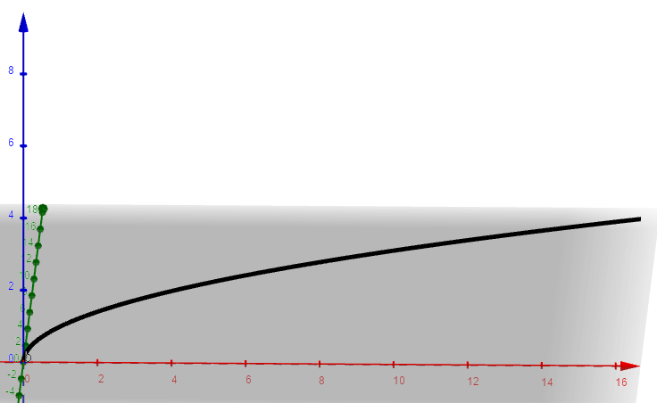

With the ability to utilize our three-dimensional coordinate system, it is now possible to graph functions of two variable inputs. First, let's think about functions of one variable input on the xy-plane. The most common type was that of y = f(x), though x = f(y) also sometimes made an appearance. We chose a point on the x-axis, which was basically a number line, and the output corresponded to a height parallel to the y-axis that was equal to the value of the function. For two variable inputs, the most common variant is to use the xy-plane as the input space and output a z-value. In other words, instead of just having a number line as our input, we can choose any pair of numbers on the floor. Let's use (3,4). We then input our point into some sort of function f(x,y).The output will be the height above the xy-plane, or the z-value. So, what will the graph of a function f(x,y) look like? Well, that of course depends on what we pick. Let's graph the function f(x,y,) = xy.
First, let's think about the domain of our function. Are there any values of x or y where our function would be undefined? Well, no. We can put in any two dimensional point (x,y) in our function without a discontinuity or undefined value. That's nice. What does this say about our function? Well, let's look at our input space (remember, this is xy-plane now). Particularly, let's look at the square marked by the origin and the point (1,1).
Every point in this square will have a specific output because the function is defined for all values of x and y. If every point on the rectangle has a corresponding point on the function, then the output will look like a patch above the input space, which is just that square in our example. For f(x,y) = xy, we have this curvy bit:
The important part here is to note that our function will create this patch with a height equivalent to the output of the function. The thing is, this idea of making a "patch" applies across the entire xy-plane. So, what we end up doing is making a surface. Functions of x and y tend to be surfaces, though many have discontinuities. Here is the function f(x,y,) = xy where both x and y range from -5 to 5.
We will later take the time to describe functions of two variables in more depth when we start talking about calculus with multivariable functions, but for now, the point is to understand what they look like graphically. If you're wondering what a function with a discontinuity looks like, by the way, consider the function f(x,y) = cos(x)/y where x and y range from -1 to 1.
Notice that there is an infinite discontinuity where the value of y is 0 anywhere in the function. We will pay attention to discontinuities more when we talk about the limits of multivariable functions, which are surprisingly more difficult than those of functions of a single variable. You should already realize that a lot of properties that were interesting to us in single-variable calculus come back in multivariable form. For example, how would you describe how steep a graph is in a certain area?
I've demonstrated some functions so far, and I've been using software to draw them as of now. Of course, if you're in an area where a computer is inaccessible, or if you're taking a test, that's a luxury that you can't have. So, with a pencil and straightedge (and perhaps a calculator), how do you graph multivariable functions? I'm asking this because we're used to it being really easy to graph single-variable functions. Take, for example, f(x) = x^2. The recommended course of action here, if you hadn't already known what the graph looks like, is to plot a few points around the origin. Maybe make a table, and plot the points. You'd get the general shape of the graph. Try doing this with multivariable functions though. Do you make two tables? Take, for example, the function f(x,y) = xy like we saw earlier. Here are eight points that have been plotted.

Do you think you'd be able to accurately draw a graph? Maybe, and it would probably get better if you added another 8 or 10 points, but it might be hard to capture the whole essence of the function. And plus, that was just within a 1 by 1 square. Think about having to graph much more of the function. It's safe to say that we need another system, but what would that even be?
Let's start our discussion by considering a different function: f(x,y) = x^2 + y^2. Try graphing it for yourself. You might be able to get it after a while, but it would still take some work. If you played around with it long around, though. Maybe, just maybe, you'd realize that some points share the same z-value. For example, f(3,4) = f(4,3) = f(5,0) = f(0,5) = 25. Then, it would be wise to look at our function everywhere where z is 25. Since they lay on one layer of z, we can maybe draw some sort of curve on the plane z = 25. There has to be some sort of system of equations we can solve to find all of the values of x and y such that z is equal to 25. In other words, find x and y such that f(x,y) = z where f(x,y) = x^2 + y^2 and z = 25. Substituting these values, we get 25 = x^2 + y^2. Hey, this looks familiar. Yes, this is a circle of radius 5 centered at the origin, or, sort of. It's centered at the point where x = 0 and y = 0, but keep in mind that this entire curve occupies the area where z = 25, so the center really is at (0,0,25). Anyway, this means that when we take a slice of our function at z = 25, we would see a circle of radius 5. Consider what would happen when z = 24. We would have x^2 + y^2 = 24, or a circle of radius 2 root 6, once again centered around the z-axis, but at z = 24, meaning we have a circle of slightly lower radius at a slightly lower height. At z = 26, we would have x^2 + y^2 = 26, which is a circle of radius root 26 centered around the z-axis at a slightly higher height. All three curves can be plotted as such, which, to be honest, are hard to differentiate.
Let's graph more circles at higher and lower z-values.
It's clear that by doing this, a shape is definitely forming. We're doing this by basically "disregarding" the z-component of the function and only looking at what x and y are doing at each value of z. What if, however, we do what we did when we defined what the xy, xz, and yz planes were? As in, we basically said that z was 0. Hold on, what does this even mean? Well, you might arrive here naturally by looking directly down at our surface.
We have these concentric disks, the largest of which being the uppermost circle. What causes this phenomenon? Well, when we look directly down at our surface, we can't tell different z-values apart, so we're only focusing on what x and y are doing and can effectively treat every z-value as the floor. This phenomenon is known as tracing--we're looking at the traces of f(x,y) in the xy-plane. It also lets us know that every slice of our function is a circle, and these circles end up having very large radii. That begs the question though, what do other traces look like? What if we looked at what our function did at particular values of x, for example. If we set x to constantly equal 1 , we would end up with z = 1 + y^2. In essence, we're holding x constant at 1 and letting y vary across many numbers. This is a curve z = f(y) such that it lies on the plane x = 1. What's interesting, though, is that this is a parabola. While we were able to construct our function out of circles, if we let x equal many different numbers, perhaps we can also view its structure this way as well? Notice that for some x value a, our equation becomes z = a + y^2, which is a curve on the plane x = a. If we put a bunch of different values of x together, we get something like this:
And, if we were to completely disregard the values of x by looking at the traces on the yz-plane, we'd see this:
Make no mistake, these are traces of the same function. However, the first time, we looked at layers that were sliced horizontally going up. We then looked down those layers. We saw from that perspective, we saw layers of circles being placed on top of each other. This time, instead of slicing our function horizontally, we sliced it with planes parallel to the y-axis. When we viewed what was on each slice, we saw parabolas. This means that the different parents of the function have different appearances depending on how we look at them. The complete function is combining all of these perspectives together. To do this, let's consider what our function looks like when we slice it by fixing y at specific values. We now have z = x^2 + b, where b is a specific value of y. This creates a curve on the plane y = b.
We once again have parabolas, but notice that these traces would lie on the xz-plane rather than the yz-one. In other words, when we look at the function vertically, we see circles. If we look at the function projected onto the horizontally aligned axes' planes, we see parabolas. Now, if we combine all three of these perspectives together, maybe we'll be able to see the full function. Let's do that near the origin.
It seems we have this interesting shape that sort of looks like, for the lack of a better term, a 3D parabola. Indeed, this is what we'd get if we rotated a parabola around the origin. It has a special name: a paraboloid. Here's a better graphical representation of what we just drew with traces.
Note that on the graphing calculator, you can actually see the traces as contour lines on the side!
I wrote this earlier, but we'll go into more detail about when we talk about doing calculus with them. For now, we can talk about rough properties. First of all, there's nothing that mandates that functions must be of the form z = f(x,y). We could also have one written like x = f(y,z) or y = f(x,z). Recall from single-variable calculus that when finding the volume of a solid of revolution or arc length, it was more useful to rewrite x = f(y) rather than y = f(x). We will be revisiting this concept for integrals in multiple dimensions down the line. The other thing that's worth discussing right now is basic function transformations. They are basically three-dimensional analogs of what we've seen in two-dimensions. A more rigorous understanding of why they still work requires an understanding of something called partial derivatives, though. For now, there should be some transfer of intuition from the 2D case to the 3D case and some intuition that we can demonstrate in some graphs. For example, consider the graph of the function z = f(x,y,) = (x-1)^2 + (y-2)^2
This is, if you couldn't guess, a paraboloid with its vertex at (1,2,0). The intuition for this, besides the fact that the structure is similar to that of function translations in two dimensions, comes from the question of what the vertex represents, which is the minimum point. If you were trying to find the absolute minimum of the paraboloid, what would you plug in for x and y? Well, since both terms are squared, the minimum value is 0, and by the zero product property, the only time both quadratic terms would equal 0 is if x - 1 = 0 and y - 2 = 0. This, of course, happens at (1,2,0). If we multiply our function by -1, that is, so it becomes z = -(x-1)^2 -(y-2)^2, our function is reflected over the xy-plane. This time, we would end up with a local maximum and every point is reflected, perfectly analogous to the two-dimensional case. Finally, if we multiply our entire function so that it becomes 3(x-1)^2 + 3(y-2)^2, we end up creating a paraboloid that's skinnier, because any change in x or y would logically becomes three times larger, so our function increases more in a smaller amount of change.
There's one more type of transformation that sometimes gets neglected, which in functions of a single variable, we referred to as a reflection across the y-axis, or f(-x). Due to symmetry rules, this one doesn't always pop out very well, but we know the the greatest way to show off -f(x) versus f(-x) was with square root functions. So, let's look at the function f(x,y) = root(x) + root(y) as our parent function:
Now, what do you suppose will happen if we change our function to root(-x) + root(-y)? Before showing a picture, let's think about this in a more simple manner by asking ourselves a simpler question. What is we only change our function to root(-x) + root(y)? We hope this will be a simpler problem because we're already used to y = root(-x). We're changing nothing about our y-component. Before going further down this road, let's back up a little bit. I showed you the graph of root(x) + root(y), but how would you graph this on a piece of paper? Well, just like we did with our parabola, the best method is to focus on the traces we find by slicing our function in different ways in combining them. We did this by treating one of our variables as constant while we manipulated the other to create a function of one variable. So, let's first start by graphing the traces on planes parallel to the xz-plane, that is, by keeping y as a constant and graphing curves on the plane y = a. Directly on the xz-plane, we actually find the curve z = root(x), as shown here:
And, for a value of y such as 2, we would get z = root(x) + root(2), which, along the plane y = 2, looks something like this:
If we put a bunch of these trace curves on the plane, we would create the surface that we saw earlier, and if we create trace curves along planes that are parallel to the yz-plane, on planes of x = a, we get curves that look like this:
So, once again notice that the behavior of the surface is formed by that of the traces coming together. This should help us get better to answering the question of what the graph of root(-x) + root(y) looks like. When we treat y as a constant, so looking at traces parallel to the xz-plane, our function becomes z = root(-x) + root(a) on the plane y = a. Notice, this is almost the same as viewing the traces of our parent function, z = root(x) + root(a), except that our curve would be reflected across the z-axis. In other words, a trace would look like this:
And what about our other traces? Well, looking at traces in planes parallel to the yz-plane, we'd get z = root(y) + root(-a) on the plane x = a. This, of course, only works for negative values of x, but the actual shape of the traces will not change. The first time around, we were seeing them project outwards from the yz-plane and towards positive x-values, now they're going from the yz-plane to negative outputs. The shape is the exact same. Here is our modified function graphed in red with the parent function in orange:

As we can see, this function is really our parent function refelcted over the yz-plane. This makes sense, one of our traces was reflected across the z-axis while the y-axis is the axis that separates the positive x-values from the negative ones. Now, then, let's go back to answering our original question. What does the graph of f(x,y) = root(-x) + root(-y) look like? Well, let's focus on our traces individually. So, if we let y range through constant values, we see that we're left with f(x) = root(-x) + root(-a) on the plane y = a. Looking at just the planes, the curves have been reflected across the z-axis, which means that the curve will only take negative values of x and occurs in that direction. Also, since root(-a) can only take negative values of a, we can determine that the values of y must be negative as well. We can also deduce this by looking at the other traces when we look at projections onto planes parallel to the yz-plane, where x is constant. We end up with f(y) = -root(-a) + root(-y), which will only take negative y-values. This curve is also reflected across the z-axis, but with respect to a different axis. Our final curve, as a result, is reflected across the z-axis when it's already on one side of the x-axis, and it's reflected once again when it's on one side of the y-axis. Since our function only outputs positive values, we can practically say that it was rotated 180 degrees into the third quadrant. In the following picture, the parent function is shown in purple.
This lesson with square roots has given us an interesting observation: when we sum a function of x with a function of y to create some sort of surface, the overall behavior of the surface is dependent on the behavior of the traces on different planes. With the square roots, when we reflected the x-axis, for example, but kept the root(y) as is, only the x-values were actually made negative. The reason I bring this up is that with the example of the quadratic function f(x,y) = (x-1)^2 + (y-2)^2 is that when we reflected it over the xy-plane, we did so by multiplying the entire function by -1. However, consider graphing that quadratic function by traces. On planes parallel to the xz-plane, we have the function f(x) = (x-1)^2 + (a-2)^2 at y = a, and f(y) = (b-1)^2 + (y-2)^2 at x = b. These are our two sets of traces. When we multiply the entire function by -1, we can also imagine it as multiplying both of our trace functions by -1 since they are just a simple sum. This causes our parabolic curves to go from concave up (from the fact that the leading coefficient would be 1) to concave down (now, -1). This symmetry is nice, but it begs the question. What would happen if one of the quadratic terms stayed positive while the other became negative? We saw something similar to this behavior with the square roots, albeit we were reflecting over the boundary planes containing the z-axis, not the xy-plane. What would happen in the case of the function f(x,y) = (x-1)^2 - (y-2)^2? To answer this question, let's go back to our old friend that we just mentioned: traces. Let us first look at the traces in planes parallel to the xz-plane, where y is some constant a. We reduce our function to f(x) = (x-1)^2 - (a-2)^2. This is an upward-opening parabola, and at y = 2 (which we'll use to get rid of the pesky constant term), it would simply be the function f(x) = (x-1)^2. Now, what about traces in planes parallel to the yz-plane, where x is some constant b? We'd get the function f(y) = (b-1)^2 - (y-2)^2. This is a lot different since we now have a downward-opening parabola. At x = 1, we get f(y) = -(y-2)^2. When we combine both of our curves together, we get a very interesting result.
So, right off the bat we can see that this is going to look significantly different from our circular paraboloid from earlier. Remember, why does the function behave like this? It's because the way we've changed the signs has made the signs of the quadratic terms, and thus the traces, not symmetric. It would be very hard to deduce what this function even looks like, so let us look at a few more traces on some more planes.
This function, which vaguely looks like Pringles, is something that we can describe as parabolas being stacked on top of other parabolas. To be fair, our circular paraboloid already had parabolas stacked on top of each other, but it's more evident here since signs are different. Now, we've looked at traces on planes of x and y, but what about z? What if we created horizontal slices instead of vertical ones? In this case, we would have z equal a constant. Let's first start by allowing z to equal 0. This actually creates an interesting equation that we can simplify down to a set of two lines: y = x + 1 and y = 3 - x. We'll put those traces on our graph for now. Next, let z = 1. We're left with the trace 1 = (x-1)^2 - (y-2)^2, which we might be tempted to simplify further to isolate variables, but this should actually be a form that we recognize. Ripping out some conic sections, you should realize that this is a hyperbola opening horizontally whose center is at (1,2). Setting z equal to larger values like 2 or 3 will still warrant a hyperbola opening horizontally with a center at (1,2), but the larger constant will cause the equation of the asymptotic lines to change, as well as the locations of the foci. When we set z to a value below 0, however, something interesting happens. Consider the equation -1 = (x-1)^2 - (y-2)^2. The most useful form of a conic section is when whatever terms are equal to 1, so if we divide both sides by -1, we end up with 1 = (y-2)^2 - (x-1)^2. Notice that, since the term with the negative sign has changed, the hyperbola is actually opening vertically when projected on a plane below the xy-plane. As z's value gets lower and lower, the center once again stays the same, but the coordiantes of the foci and asymptotic lines also change. Let's see what our figure looks like when some of these traces are applied.
If you're curious about the full graph, here it is!
What's beautiful about this surface is that if we had kept graphing more and more parabolas, the pattern of the hyperbolas would have begun to appear as well if we focused are eyes on one layer of z. It is just much easier to visualize when it is all put together, however. The question, then, is about what to call it. Well, when the signs of our quadratic components aligned, the traces on vertical layers formed circles, and we called it a circular paraboloid. The traces on vertical layers here are hyperbolas, and thus we call this sort of surface a hyperbolic paraboloid. Another thing to ask about is our "important" point, (1,2). When we looked at circular paraboloids, it was either a maximum or minimum depending on the sign. If we look at the traces at (1,2), however, we see smoething conflicting: on the trace of the parabola which opens up, the point is clearly a minimum, while on the downward-opening parabola, the point is a maximum. This gives rise to an interesting concept where depending on the direction we approach a point from, results can very widely. This particular type of point which is a maximum from one direction but a minimum from another is known as a saddle point, which we'll study later.
We've reflected our traces in varying ways over horizontal and vertical planes, and what's left is to see what happens when our traces are dilated by varying amounts. Let's consider the function f(x,y) = 3(x-1)^2 + (1/2)(y-2)^2. We will first consider traces in planes parallel to the yz-plane, where x is a constant a. We get f(y) = 3(a-1)^2 + (1/2)(y-2)^2, which at a = 1 is simply the function f(y) = (1/2)(y-2)^2. For the function f(x) = 3(x-1)^2 + (1/2)(b-2)^2 on planes parallel to the xz-plane, at y = b = 2, we get the function 3(x-1)^2. I'll graph a few traces on planes around our absolute minimum:
So, this doesn't look insanely different from our circular paraboloid, but it's clear that the inconsistent dilations are causing the circle to be stretched and squished in a way so that it is no longer a circle, which we can confirm by looking at the traces in planes parallel to the xy-plane. At z = 1, our curve is 1 = 3(x-1)^2 +(1/2)(y-2)^2. This is an ellipse, which is more apparent if we put it in the proper form as 1 = ((x-1)^2)/(1/3)+((y-2)^2)/2. The denominator is larger in the y-term, meaning that the distance from the center to the ellipse's edge will be longer on the y-side. Here is a full graph of the surface, which we will call an elliptic paraboloid.
So the functions that we've graphed so far have had a specific pattern to them. They're the sum of an x-term and a y-term, which is actually the easiest type of multivariable function to graph, and it all has to do with the traces. To demonstrate, let's try graphing a function that is not a simple sum of an x-term and y-term: f(x,y) = (x^3)sin(y). The fact that this is the product of an x and y-term will actually make it much harder to graph, which we'll soon discover. We'll graph, or attempt to graph, traces in planes parallel to all 3 boundary planes.
So, let us start by first graphing traces in planes parallel to the yz-plane by finding traces in planes x = a. In any such plane, we arrive at the function f(y) = a^3sin(y). Here are some traces graphed on planes near the origin.
It obviously is going to be a bit cluttered because it is a trigonometric function, but something should strike as a bit odd--the traces look wildly different. Some seem almost flat while others are jagged. On the other hand, the traces for our paraboloids were basically the same shape but shifted based on the positioning. These traces, it seems, vary in shape depending on the location where we slice our surface. Why is this? Well, remember, this function is a product of two components, it is ultimate (x^3)sin(y). When we set x to a constant value, notice that the function sin(y) will be multiplied by some constant which will dilate it by a certain amount. The level of this dilation depends on this value of x. For x = 1, our trace becomes f(y) = sin(y) while for x = 10 it would be f(y) = 1000sin(y). This sort of transformation fundamentally changes the shape and rate of change of our trace. Compare this to the function f(x,y) = x^2 + y^2. If we set x to a constant value a, our function simply becomes f(y) = a^2 + y^2. Notice that this function will not change shape depending on the value of x. Yes, it will be shifted up, but the actual shape of the parabola will be the same as the one created by the function f(y) = y^2. This will cause no effect on the local behavior of the function--it isn't reaching certain points faster or slower, higher or lower, like we saw in our trig function. This is possible because there is no interaction between our x and y components besides addition. The shape of the y-term isn't dependent on x at all since there is no combination between x and y terms. The extent to which x and y are linked in our function is even more apparent if we consider traces in planes parallel to the xz-plane, that is, where y is held constant. On some plane y = b, our curve becomes the function f(x) = x^3sin(b). Try graphing some traces for yourself. Here they are:
While it's a bit subtle, each cubic function is distinctly different in shape from the other (and thus in behavior) from the fact that the sine function is dilating it. We will now look at our last set of traces: those on planes parallel to the xy-plane, which are given by the equation c = x^3sin(y) on any plane z = c. This implicit curve is a bit hard to graph, and the traces are quite frankly ugly, but they are dilated once again. If you're curious about what the final surface looks like, by the way, here it is.
We run into similar issues with function composition, or when a function is placed inside of another one. Take, for example, this monster of a function
The fact that there are functions inside of other functions will surely make the job of creating traces much harder since what we end up creating is deeply nested inside of other functions. The lesson at the end of the day is that the easiest functions to graph that require a three-dimensional coordiante grid are those that have separate x and y terms.